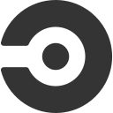

AKS platform stabilization
Standardized workloads, autoscaling, probes, ingress, and GitOps delivery across production environments.
4Environments managed
24HPA policies enforced
0Staging IaC drift
Senior Cloud DevOps / Platform Engineer
I stabilize inherited platforms and turn them into secure, automated, observable production systems across Azure, AKS, Terraform, GitHub Actions, APIM, Key Vault, and Kubernetes delivery.
Standardized workloads, autoscaling, probes, ingress, and GitOps delivery across production environments.
Aligned Terraform delivery, repository standards, database indexing, and production ingress exposure.
The strongest story is not a tool list. It is how unstable delivery became a governed production platform.
Four AKS environments stabilized with standardized autoscaling, probes, ingress, secure delivery, and environment-aware configuration.
Each case connects an engineering action to the operating result a hiring manager can inspect.
Migrated secret handling toward Key Vault CSI, standardized environment variables, and prevented cross-environment deployment mistakes.
Implemented HPA coverage, upgraded AKS capacity, tuned resources, fixed probes and service routing, and standardized overlays.
Built monitoring and reporting around Application Insights, Grafana, Prometheus, availability tests, alert rules, and performance assessments.
A clear path from cloud and systems administration through client delivery into production platform engineering.
Own cloud platform delivery for client environments, including the Mosadad Recovery Claims platform: stabilized Azure and Terraform, operated four AKS environments, onboarded microservices, modernized CI/CD, and strengthened APIM, Key Vault, and RBAC controls.
Administered Windows, Linux, and AWS environments; supported CI/CD platforms; automated maintenance, backups, and deployments with Bash and Python; and sustained 99.9% service uptime.
Delivered a client-facing 3-tier web application on AWS with automated infrastructure, CI/CD, container orchestration, autoscaling, and monitoring across the full DevOps lifecycle.
Delivered two client web applications on AWS: a static website provisioned with CloudFormation and a 3-tier application deployed through an automated CircleCI pipeline with observability controls.
Focused examples of infrastructure, delivery, GitOps, and environment standardization.
Terraform modules for AKS, VNet, Key Vault, ACR, and API Management patterns.
ApplicationSet, app-of-apps, environment values, and Helm microservice chart structure.
Build, test, container publish, AKS deploy, and APIM import workflow templates.
Base and overlay structure for dev and prod with service-specific manifests.
A concise system view connecting delivery, runtime, security, and observability without adding a heavy diagram asset.
The stack is grouped by how it supports secure, repeatable production delivery.

CircleCIGitLab CIAnsibleYAMLCloud credentials lead. Professional development supports senior communication and decision-making.
Cloud architecture, resilient workload design, and service selection.
Valid to Sep 2028Cloud concepts, security, billing, and AWS service foundations.
Valid to Sep 2028Identity and Access Administrator.
IdentityKubernetes and Azure administration exam-ready tracks.
In progressProblem solving, communication, adaptability, and digital collaboration.
CompletedCloud, network virtualization, and software-defined storage foundations.
FoundationsRemote, UAE, KSA, or Egypt-based. Strongest fit: Azure platform engineering, Kubernetes delivery, CI/CD modernization, and production operations.